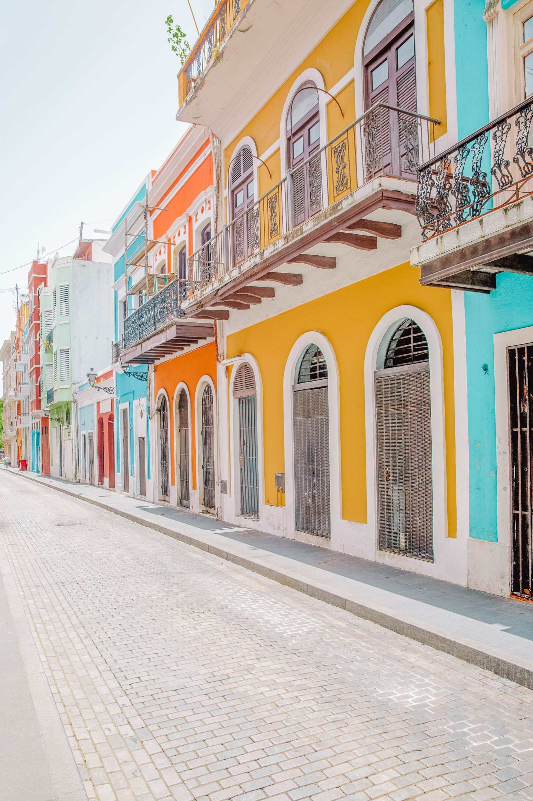
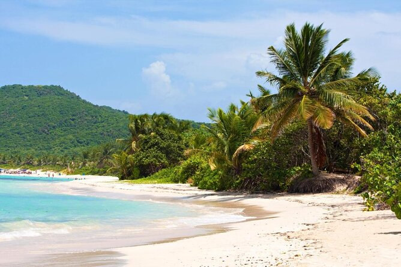
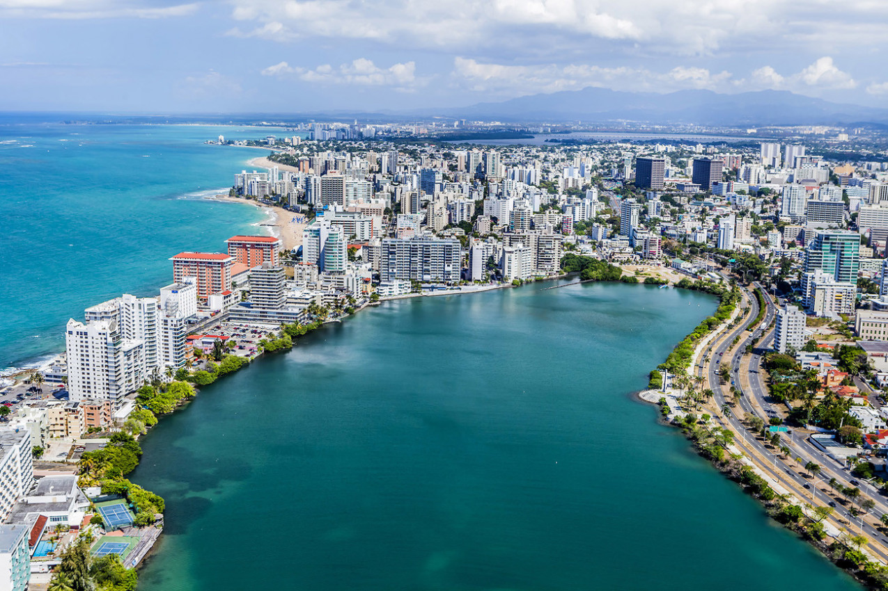
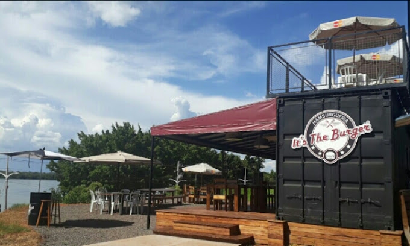
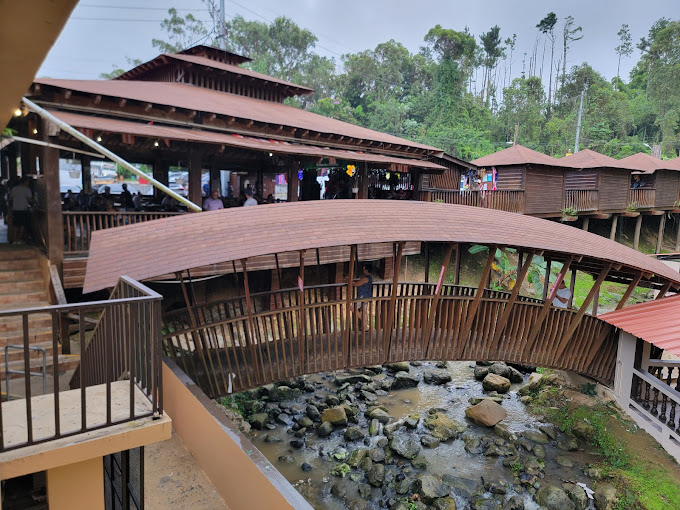

A Baía Bioluminescente (também conhecida como Baía do Mosquito ou Puerto Mosquito) é uma das três baías bioluminescentes de Porto Rico, localizada na ilha de Vieques.
Um destino popular para passeios noturnos de barco, esta baía é de longe a mais iluminada.
A água é iluminada por dinoflagelados chamados Pyrodinium bahamense, minúsculos microorganismos que brilham quando tocados.
Excursoẽs: sobre a praia
Ouça aqui:
|  |  |  |
| Preço da viajem | Restaurantes | Passeios | Local | fotos |
|---|---|---|---|---|
| $$$$ | It's The Burguer | definido pela locação | opcional |  |
| $$$$ | Lechonera El Rancho Original | definido pelo horário | Baia do Mosquito |  |